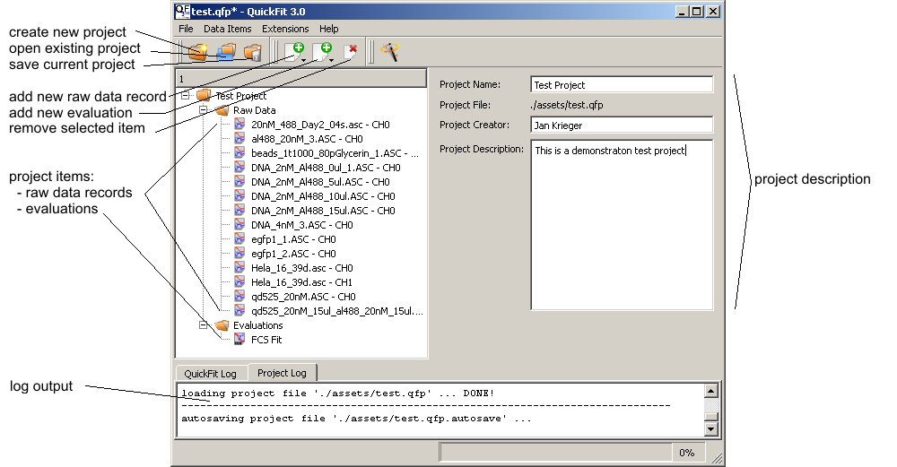

$$qf_commondoc_header.start$$ $$qf_commondoc_header.end$$

This window is used to manage the project. On the left side the project is displayed in a tree-structure. The raw data records and evaluation items are sorted into different folders. On the right of the project tree you may enter some project descriptions (a name, an author and a longer description). Below the project data, two tabs show log files where the different QuickFit components may output messages. The QuickFit log is saved (and may be read after the program was closed) in <configDir>/quickfit3.log. The project log is saved as <projectFileName>.qfp.log in the same diectory as the project.
The menus and tool buttons may be used to alter the project:
- File |
 New Project: create a new QuickFit project
New Project: create a new QuickFit project Open Project: open an existing QuickFit project
Open Project: open an existing QuickFit project Reload Current Project: reload the current project. This saves the current project (if the user selects this option) and then loads it again from disk.
Reload Current Project: reload the current project. This saves the current project (if the user selects this option) and then loads it again from disk.- Special Project Tools | Open Project Subset: open only a user-selectable subset of items (RDRs and evaluations) from an existing QuickFit project
 FileSave Project: save the current QuickFit project. This function is called automatically, if you add your first item to a new project. Also there is an autosave utility that saves the current project every few minutes to a .qfp.autosave file, which you may load as any othe project
FileSave Project: save the current QuickFit project. This function is called automatically, if you add your first item to a new project. Also there is an autosave utility that saves the current project every few minutes to a .qfp.autosave file, which you may load as any othe project Save Project As: save the current QuickFit project with a new filename
Save Project As: save the current QuickFit project with a new filename Settings: change some program settings (e.g. select translations)
Settings: change some program settings (e.g. select translations) Exit: quit QuickFit
Exit: quit QuickFit
- Data Items |
 Insert Raw Data: this sub-menu provides possibilities to add a new raw data item. All the items in this sub-menu are registered by the QuickFit plugins and it is possible that multiple items lead to the creation of the same type of record, but with different parameters.
Insert Raw Data: this sub-menu provides possibilities to add a new raw data item. All the items in this sub-menu are registered by the QuickFit plugins and it is possible that multiple items lead to the creation of the same type of record, but with different parameters. Insert Evaluation: this sub-menu provides possibilities to add a new evaluation item.
Insert Evaluation: this sub-menu provides possibilities to add a new evaluation item. Duplicate Current Item(s): duplicates the selected record (RDR or evaluation) and adds it as a new record to the project. If a folder is selected, all items in the folder are duplicated.
Duplicate Current Item(s): duplicates the selected record (RDR or evaluation) and adds it as a new record to the project. If a folder is selected, all items in the folder are duplicated. Delete Current Item(s): remove the currently selected item (raw data record or evaluation item) from the project.
Delete Current Item(s): remove the currently selected item (raw data record or evaluation item) from the project. Copy Current Item(s): copy the currently selected item (raw data record or evaluation item) into the clipboard.
Copy Current Item(s): copy the currently selected item (raw data record or evaluation item) into the clipboard. Cut Current Item(s): copy into clipboard and remove (=cut) the currently selected item from the project (raw data record or evaluation item).
Cut Current Item(s): copy into clipboard and remove (=cut) the currently selected item from the project (raw data record or evaluation item). Paste Item(s): paste items from the clipboard into the current project.
Paste Item(s): paste items from the clipboard into the current project.
- Extensions |
- In this menu some QuickFit plugins may create entries to provide additional functionality. Such entries may also appear as buttons in the toolbar.
- Tools |
- Project Tools: This sub-menu contains several tools, that allow to e.g. set RDR properties, ... $$see:This help page summarizes the available tools$$
- In addition: this menu may be filled by some QuickFit plugins with entries to provide additional functionality/tools.
- View |
- project tree sort order ...: After a click, a sub-menu appears, which allows the user to select a sort order for the items in the project tree.
- Help |
 Help: display this online help.
Help: display this online help. About: display version and author information of QuickFit
About: display version and author information of QuickFit- About Plugins: display a list of all available QuickFit plugins, together with author, copyright and version information.
A double-click on a raw data record or an evaluation in the project tree opens a new window displaying this element. Details about these sub-windows may be found here: